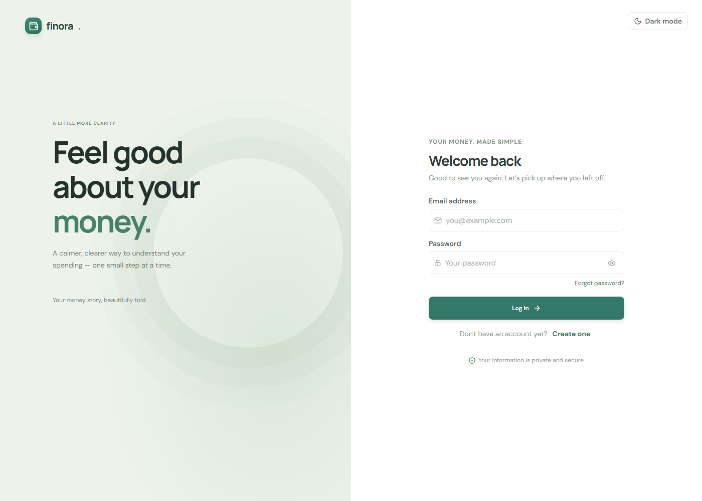

Web application development · Mini project
A simple, secure workspace for recording personal income and expenses and understanding monthly cash flow.
01 · Context and objectives
Finora is a browser-based personal finance tracker. It brings everyday income and expense records, user-defined categories, and period summaries into one focused interface.
Personal spending recorded across paper notes or disconnected spreadsheets can be difficult to review consistently. Users need a straightforward way to maintain a transaction history, group expenses, and see how recorded income compares with spending.
Register, log in, edit profile details, and sign out using JWT authentication.
Manage income and expenses with categories, dates, descriptions, filters, sorting, and pagination.
Review lifetime totals, monthly cash flow, recent transactions, category spending, and reports.
| Layer | Technologies | Purpose |
|---|---|---|
| Frontend | React 18, Vite, Axios, CSS | Responsive single-page application and REST client. |
| Backend | Java 21, Spring Boot, Spring Security, Spring Data JPA | REST API, validation, authentication, and business rules. |
| Persistence | MySQL 8, Flyway | Relational storage and schema migration. |
| Verification | Vitest, React Testing Library, JUnit 5, H2, ESLint | Frontend tests, backend tests, and static checks. |
02 · System design
The application uses a conventional client–server design. The React client calls the Spring Boot REST API; backend services apply business rules and user scoping before repositories access MySQL.
A signed-in browser sends a REST request with a bearer token. Spring Security validates the token; controllers validate request DTOs and services apply the authenticated user's scope.
Spring Data repositories persist users, categories, and transactions in MySQL. Monetary values use decimal database types and Java decimal values rather than binary floating-point storage.
03 · Data model
The relational model has three core entities. User ownership is explicit for categories and transactions; a transaction may have an optional category reference.
A user owns many categories and transactions. Per-user category names are unique. User deletion cascades to owned records; a category referenced by transactions cannot be deleted.
Transactions belong to one user. Expenses require a category in the application; income may be uncategorized. Amounts are positive and stored to two decimal places.
Schema source: Flyway migration V1__init_schema.sql. Actual column names are represented in snake_case.
04 · Application evidence
The following image was captured from the application running locally in a browser. It shows the actual Finora authentication screen, not a mock-up.

04 · Application evidence
Replace each clearly marked placeholder with a screenshot captured from your own running application and account. Keep values authentic; do not use illustrative or fabricated financial records.
05 · Verification
Automated checks were run locally on 22 October 2026. Backend tests use H2; they do not require access to or alter the MySQL development database.
| Check | Verified result | Coverage / scope |
|---|---|---|
Frontend testsnpm --prefix Front-End run test | 31 passed · 6 files | Dashboard calculations, transaction-page rendering, validation, date/currency formatting, and CSV export. |
Frontend lintnpm --prefix Front-End run lint | Passed | ESLint checks the frontend source. |
Frontend buildnpm --prefix Front-End run build | Passed | Vite produced the production bundle. |
Backend tests.\Back-End\expense-tracker\mvnw.cmd -f .\Back-End\expense-tracker\pom.xml test | 29 passed · 0 failures | Authentication, service rules, reports, transaction sorting/pagination, and user isolation using JUnit 5 and H2. |
Verification environment: Node.js 24.13.0 and Java 25 were installed locally; the project targets Java 21. Re-run the checks using the required Java 21 setup before submission.
The automated suites do not replace a browser-based end-to-end acceptance run. Before demonstration, sign in with a local account and manually verify registration/login, transaction and category CRUD, delete confirmations, filters/sorting/pagination, report date ranges, theme switching, currency formatting, and desktop/mobile layouts.
06 · Conclusion
Finora demonstrates a complete, approachable personal-expense workflow across a React frontend, a Spring Boot REST backend, and a relational MySQL data model. It combines user-scoped records, category management, summary views, and automated tests while keeping the local development setup straightforward.
The verified test and build results provide evidence for core component, service, API security, filtering, and calculation behavior. Final academic submission should include the student's own authenticated-page screenshots and a manual browser walkthrough using the supplied local setup instructions.
Docker is not required. See the repository README for prerequisites, environment configuration, complete test commands, and backend-specific notes.